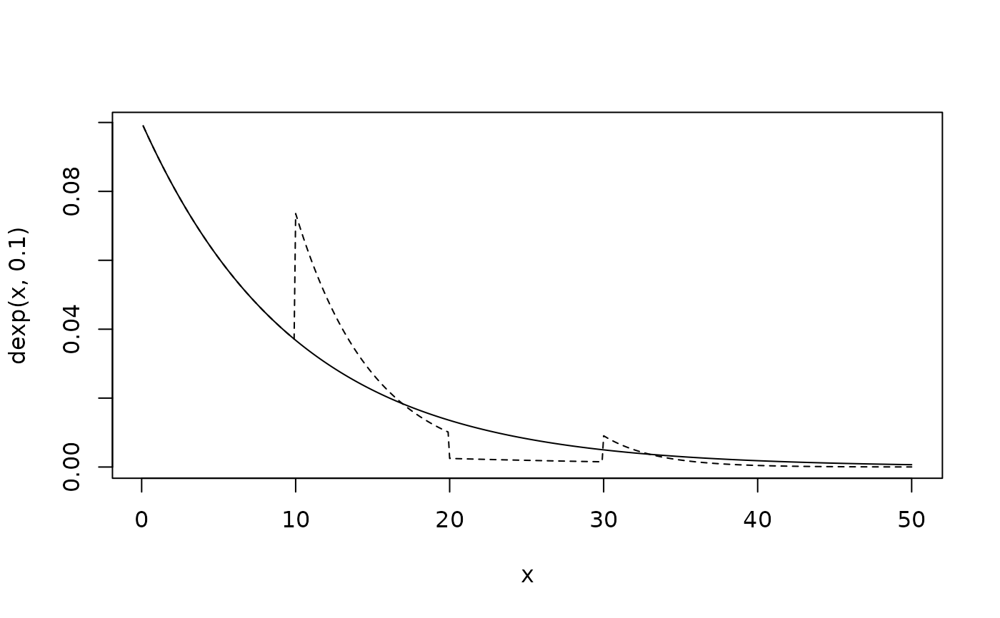
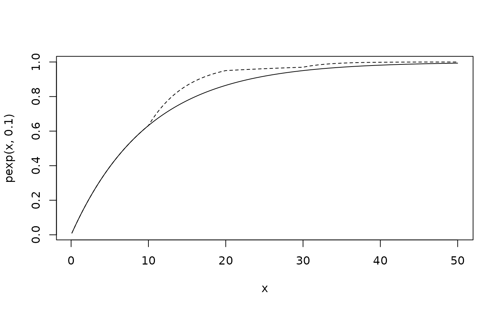

Density, distribution function, quantile function and random generation for a generalisation of the exponential distribution, in which the rate changes at a series of times.
Usage
dpexp(x, rate = 1, t = 0, log = FALSE)
ppexp(q, rate = 1, t = 0, lower.tail = TRUE, log.p = FALSE)
qpexp(p, rate = 1, t = 0, lower.tail = TRUE, log.p = FALSE)
rpexp(n = 1, rate = 1, t = 0, start = min(t))Arguments
- x, q
vector of quantiles.
- rate
vector of rates.
- t
vector of the same length as
rate, giving the times at which the rate changes. The values oftshould be in increasing order.- log, log.p
logical; if TRUE, probabilities p are given as log(p), or log density is returned.
- lower.tail
logical; if TRUE (default), probabilities are P[X <= x], otherwise, P[X > x].
- p
vector of probabilities.
- n
number of observations. If
length(n) > 1, the length is taken to be the number required.- start
numeric scalar; delayed entry time. The random deviates will be left truncated from this start time.
Value
dpexp gives the density, ppexp gives the distribution
function, qpexp gives the quantile function, and rpexp
generates random deviates.
Details
Consider the exponential distribution with rates \(r_1, \ldots, \)\( r_n\) changing at times \(t_1, \ldots, t_n\), with \(t_1 = 0\). Suppose \(t_k\) is the maximum \(t_i\) such that \(t_i < x\). The density of this distribution at \(x > 0\) is \(f(x)\) for \(k = 1\), and $$\prod_{i=1}^k (1 - F(t_{i} - t_{i-1}, r_i)) f(x - t_{k}, r_{k})$$ for k > 1.
where \(F()\) and \(f()\) are the distribution and density functions of the standard exponential distribution.
If rate is of length 1, this is just the standard exponential
distribution. Therefore, for example, dpexp(x), with no other
arguments, is simply equivalent to dexp(x).
Only rpexp is used in the msm package, to simulate from Markov
processes with piecewise-constant intensities depending on time-dependent
covariates. These functions are merely provided for completion, and are not
optimized for numerical stability or speed.
Author
C. H. Jackson chris.jackson@mrc-bsu.cam.ac.uk
Examples
x <- seq(0.1, 50, by=0.1)
rate <- c(0.1, 0.2, 0.05, 0.3)
t <- c(0, 10, 20, 30)
## standard exponential distribution
plot(x, dexp(x, 0.1), type="l")
## distribution with piecewise constant rate
lines(x, dpexp(x, rate, t), type="l", lty=2)

## standard exponential distribution
plot(x, pexp(x, 0.1), type="l")
## distribution with piecewise constant rate
lines(x, ppexp(x, rate, t), type="l", lty=2)
